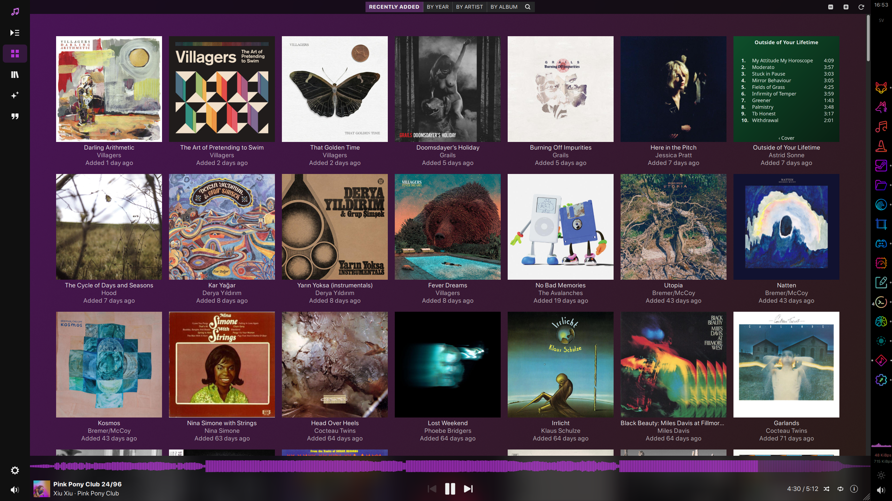
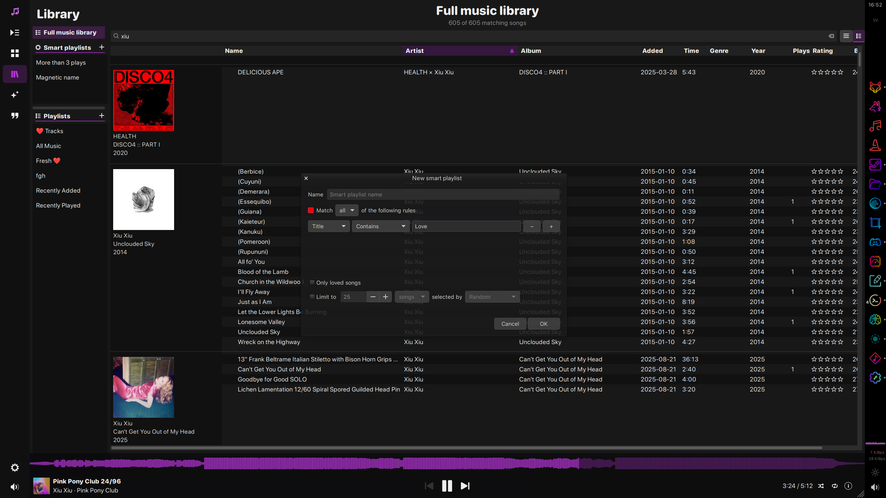
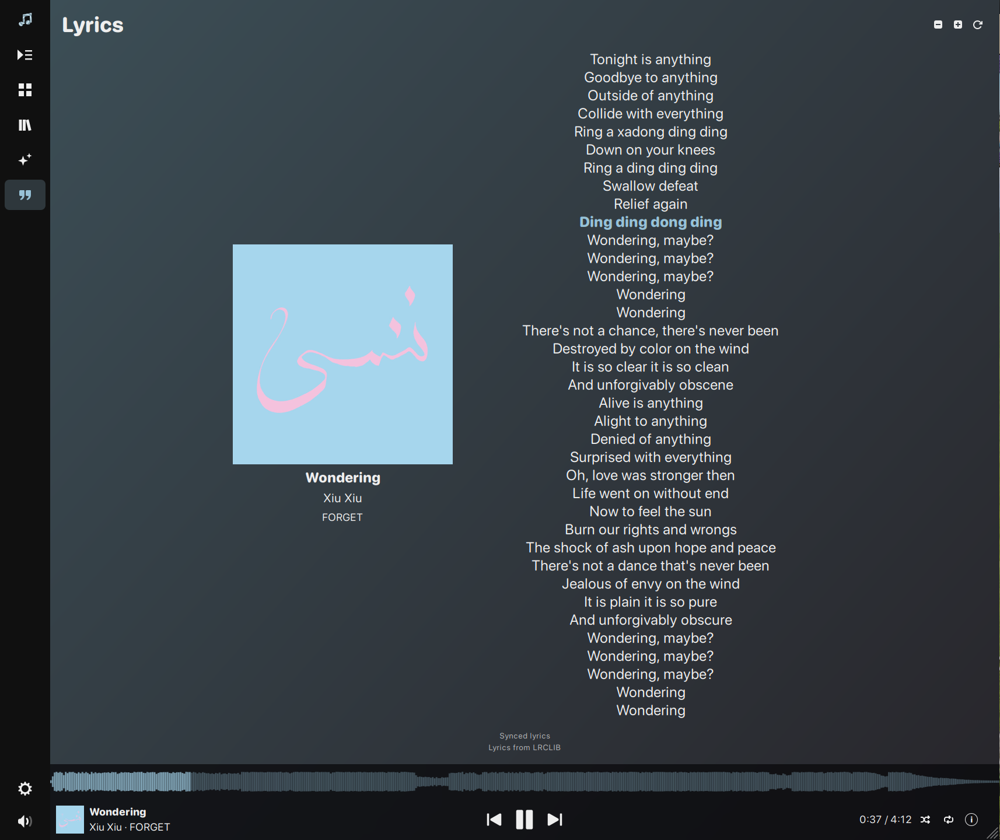

APISTAT
Apistat is a desktop music player that plays music from both Plex Media Servers and local libraries. It brings the style and music discovery of Plexamp together with the depth and library management of classic iTunes. A fast GPU accelerated UI for handling large libraries and tools for perusing your last.fm listening history.



All releases · Documentation · GitHub
Windows and macOS builds are unsigned. macOS builds are experimental and not notarized.